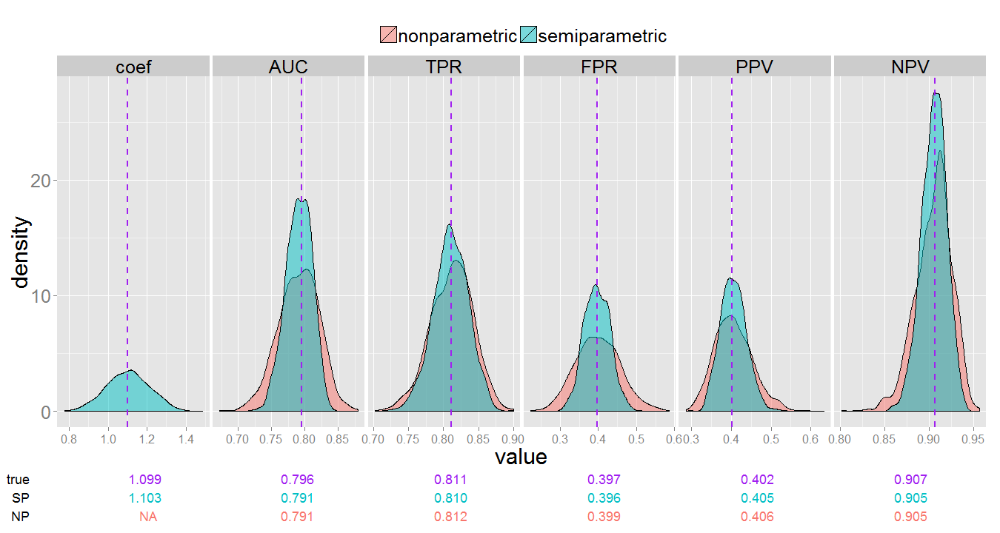
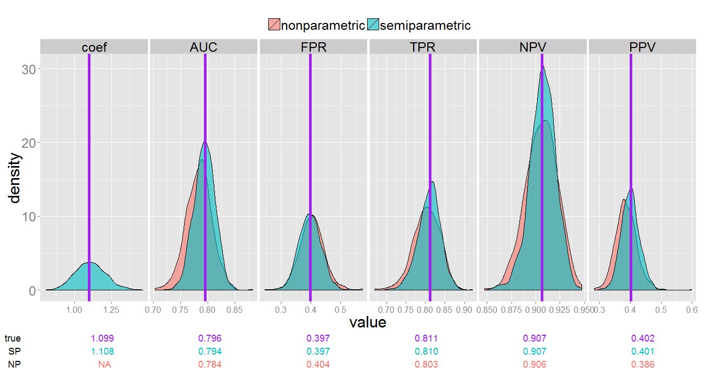

This R package computes non-parametric and semi-parametric estimates of accuracy measures for risk prediction markers from survival data under two phase study designs, namely the case-cohort (cch) and the nested case-control (ncc) study designs. Semi-parametric estimates assume a cox proportional hazards model, while non-parametric calculations use kernel based smoothing to obtain estimates.
The accuracy measures that can be estimated include the AUC, TPR(c), FPR(c), PPV(c), and NPV(c) for for a specific timepoint and fixed marker cutoff value c. Standard errors, along with normal approximated confidence intervals can be calculated under the ncc design, but are unavailable for the cch design as of now. Standard errors are calculated using perturbation methods.
Below is a brief tutorial to get you started. Results from a small simulation to serve as package validation are then shown. For more information regarding estimation procedures see the references below.
Tutorial
Download and install the package
# download the package from github
if (!require("devtools")) install.packages("devtools")
devtools::install_github("survMarkerTwoPhase", "mdbrown")
library(survMarkerTwoPhase)
# simulated data for illustration
data(SimData)
head(SimData)
## survTime status Y
## 1 0.1197 1 1.49310
## 2 1.0231 0 -0.73260
## 3 0.8282 0 -0.50211
## 4 2.0875 1 0.65758
## 5 4.6827 1 1.57806
## 6 0.3001 1 0.02419
Case-cohort design
For the case-cohort design we sample n=150 from entire cohort, and include all participants with observed failures.
# generate a sub-cohort from SimData
set.seed(12321)
# create a sample index. 1 if sampled, 0 if not
N <- nrow(SimData)
sampleInd <- rep(0, N)
# sample all with observed failure time. (200 individuals)
sampleInd[SimData$status == 1] <- 1
# sample 150 more observations from the entire data set without replacement
sampleInd[sample(1:N, 150)] <- 1
table(sampleInd) #total number of subcohort is 293
## sampleInd
## 0 1
## 207 293
To estimate accuracy measures for the case-cohort design, sample weights must be calculated. The sample weights w = 1/Pr(Sampled from cohort) for each observation included in the sub-cohort.
cohortData_cch <- SimData
# first calculate the Pr(Sampled from cohort) for each observation
sampleProb <- numeric(500)
# all non-censored observations were sampled, so their sample probability is
# 1
sampleProb[cohortData_cch$status == 1] <- 1
# all other individuals had a 150/N chance to be sampled
sampleProb[cohortData_cch$status == 0] <- 150/N
# the sample weights are 1/(probability of being sampled)
cohortData_cch$weights <- 1/sampleProb
# indicator of inclusion in the subcohort
cohortData_cch$subcohort = sampleInd
# marker data is unavailable for those not in the subcohort
cohortData_cch$Y[sampleInd == 0] = NA
Here we estimate using non-parametric estimation methods.
# estimate accuracy measures using non-parametric estimates by setting
# estimation.method = 'NP'
survMTP.cch(time = survTime, event = status, marker = Y, weights = weights,
subcoh = subcohort, data = cohortData_cch, estimation.method = "NP", predict.time = 2,
marker.cutpoint = 0)
##
## Non-parametric estimates under Case-Cohort study design.
##
## estimate
## AUC 0.749
## TPR(c) 0.699
## FPR(c) 0.394
## PPV(c) 0.331
## NPV(c) 0.878
##
## marker cutpoint: c = 0
Now estimate measures using semi-parametric estimation methods. These methods assume a Cox proportional hazards model.
# estimate accuracy measures using semi-parametric estimates
survMTP.cch(time = survTime, event = status, marker = Y, weights = weights,
subcoh = subcohort, data = cohortData_cch, estimation.method = "SP", predict.time = 2,
marker.cutpoint = 0)
##
## Semi-parametric estimates under Case-Cohort study design.
##
## estimate
## coef 1.088
## AUC 0.788
## TPR(c) 0.770
## FPR(c) 0.347
## PPV(c) 0.386
## NPV(c) 0.909
##
## marker cutpoint: c = 0
For more information see ?survMTP.cch.
Nested case-control
For a nested case-control sample, we need to input the full cohort data, with an indicator for inclusion in the subcohort, as well as a dataframe of risk sets, where each row is a case id followed by the corresponding id's that were matched to it.
Generate a nested case-control subcohort using the function ccwc from the Epi package.
require("Epi")
# 2 matched controls for each case
nmatch = 2
cohortData_ncc <- SimData
cohortData_ncc$id = 1:dim(cohortData_ncc)[1]
subcohort_ncc <- ccwc(exit = survTime, fail = status, data = cohortData_ncc,
controls = nmatch) # match 2 controls for each case.
# indicator for inclusion in the subcohort
sampleInd = rep(0, nrow(cohortData_ncc)) #initialize all equal to zero
sampleInd[subcohort_ncc$Map] = 1
cohortData_ncc$subcohort = sampleInd
table(sampleInd) #subcohort sample size of 352
# marker data is unavailable for those not in the subcohort
cohortData_ncc$Y[sampleInd == 0] = NA
# now we need to build the risk set matrix, which will be dimension (# of
# cases) x (nmatch + 1), so 200x3 here each row denotes a risk set, with the
# case id followed by the matched control ids
RiskSets <- matrix(nrow = sum(cohortData_ncc$status), ncol = nmatch + 1)
for (i in subcohort_ncc$Set) {
RiskSets[i, ] <- unlist(subset(subcohort_ncc, Set == i, select = Map))
}
Now we are ready to calculate the measures using survMTP.ncc.
# Nonparametric estimates
survMTP.ncc(time = survTime, event = status, marker = Y, subcoh = subcohort,
id = id, data = cohortData_ncc, risk.sets = RiskSets, estimation.method = "NP",
predict.time = 2, marker.cutpoint = 0)
##
## Non-parametric estimates under Nested Case-Control study design.
##
## estimate se lower 0.95 upper 0.95
##
## AUC 0.742 0.027 0.690 0.795
## FPR(c) 0.379 0.032 0.316 0.443
## TPR(c) 0.684 0.044 0.598 0.770
## NPV(c) 0.875 0.020 0.837 0.914
## PPV(c) 0.335 0.033 0.270 0.401
##
## marker cutpoint: c = 0
# Semiparametric estimates
survMTP.ncc(time = survTime, event = status, marker = Y, subcoh = subcohort,
id = id, data = cohortData_ncc, risk.sets = RiskSets, estimation.method = "SP",
predict.time = 2, marker.cutpoint = 0)
##
## Semi-parametric estimates under Nested Case-Control study design.
##
## estimate se lower 0.95 upper 0.95
##
## coef 1.017 0.082 0.857 1.177
## AUC 0.777 0.020 0.738 0.815
## FPR(c) 0.356 0.030 0.297 0.416
## TPR(c) 0.755 0.030 0.696 0.813
## NPV(c) 0.900 0.013 0.875 0.926
## PPV(c) 0.381 0.032 0.319 0.443
##
## marker cutpoint: c = 0
See ?survMTP.ncc for further help.
Package Validation
To validate the package procedures, a small simulation (1,000 replicates) was run. For each replicate, time-to-event cohort data was simulated with 80% censoring and sample size n=1,000. CCH and NCC sub samples were chosen and accuracy measures where estimated.
Case-cohort
 Non-parametric and semi-parametric estimates under the CCH design. True measure value indicated by the purple vertical lines.Nested case-control
For nested case-control designs, standard errors where also estimated. To validate these estimates, we compare the sampling distribution of SE estimates to the empirical standard error across simulations of accuracy measure estimates.
 Non-parametric and semi-parametric estimates of accuracy measures under the NCC design. True measure value indicated by the purple vertical lines. Non-parametric and semi-parametric estimates of standard error under the NCC design. Empirical standard error indicated by the purple vertical dash-lines.References
Liu D, Cai T, Zheng Y. Evaluating the predictive value of biomarkers with stratified case-cohort design. Biometrics 2012, 4: 1219-1227.
Pepe MS, Zheng Y, Jin Y. Evaluating the ROC performance of markers for future events. Lifetime Data Analysis. 2008, 14: 86-113.
Zheng Y, Cai T, Pepe MS, Levy, W. Time-dependent predictive values of prognostic biomarkers with failure time outcome. JASA 2008, 103: 362-368.
Cai T. and Zheng Y . Resampling Procedures for Making Inference under Nested Case-control Studies. JASA 2013 (in press).
Cai T and Zheng Y/, Evaluating Prognostic Accuracy of Biomarkers under nested case-control studies. *Biostatistics 2012, 13,1, 89-100.
(* equal contributor and corresponding author).